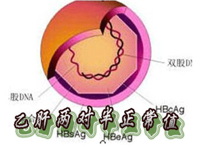
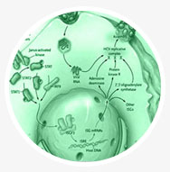

乙肝两对半是什么意思？
乙肝两对半，又称乙肝五项、乙肝二对半，主要是指乙肝表面抗原、乙肝表面抗体、乙肝e抗原、乙肝e抗体和乙肝核心抗体五项。其检查意义在于：检查是否感染乙肝及感染的具体情况，区分大三阳、小三阳。
乙肝两对半具体有哪些检查项目？
第一表面抗原(HBsAg)
它是乙肝病毒的外壳蛋白，本身不具有传染性，它通常为感染乙肝病毒的标志，不能反应出乙肝病毒的复制及传染性强弱；第二：表面抗体(HBsAb)
是一种中和性保护抗体，预示着人体是否还有抵抗力的主要标志；第三：e抗原(HBeAg)
是乙肝病毒有无复制和传染性强弱的标志；第四：e抗体(HBeAb)
为乙肝病毒复制停止的标志，表示体内乙肝病毒停止复制或者复制程度不活跃；第五：核心抗体(HBcAb)
是曾经感染过或现在正在感染病毒的标志。乙肝两对半检验报告单
肝病科
- 姓名：蒋伍桂
- 性别：女
- 年龄：51岁
- 科室：肝病科
- 标本号：01
| 英文 | 检验结果 | 参考值 | |
| 表面抗原 | HBsAg | 阴性 | 阴性 |
| 表面抗体 | HBsAb | 阳性 | 阴性/阳性 |
| E抗原 | HBeAg | 阴性 | 阴性 |
| E抗体 | HBeAb | 阴性 | 阴性 |
| 可信抗体 | HBcAb | 阴性 | 阴性 |
乙肝两对半正常值是什么？
乙肝两对半化验单怎么看？
乙肝两对半检查结果分析：9种常见模式
| 序号 | HBsAg | HBsAb | HBeAg | HBeAb | HBcAb | 常见结果分析 | 俗称 |
| 01 | - | - | - | - | - | 过去和现在未感染过肝病 | 乙肝两对半全阴 |
| 02 | - | - | - | - | + | 既往感染未能测出抗-HBs； | 乙肝两对半5阳性 |
| 03 | - | - | - | + | + | 1.既往感染过HBV； 2.急性HBV感染恢复期； 3.少数标本仍有传染性 |
乙肝两对半45阳性 |
| 04 | - | + | - | - | - | 1.注射过乙肝苗有免疫； 2.既往感染； 3.假阳性 |
乙肝两对半2阳性 |
| 05 | - | + | - | + | + | 急性HBV感染后康复，处于恢复期。 | 乙肝两对半245阳性 |
| 06 | + | - | - | - | + | 1.急性HBV感染； 2.慢性HBsAg携带者； 3.传染性弱。 |
乙肝两对半15阳性 |
| 07 | - | + | - | - | + | 1.既往感染，仍有免疫力。 2.HBV感染，恢复期。 |
乙肝两对半25阳性 |
| 08 | + | - | - | + | + | 1.急性HBV感染趋向恢复； 2.慢性HBsAg携带者； 3.传染性相对较弱。 |
乙肝两对半145阳 性；即俗称的"小三 阳"。 |
| 09 | + | - | + | - | + | 急性或慢性乙肝感染。提示HBV 复制，传染强。 |
乙肝两对半135阳性 俗称"大三阳"。 |
乙肝两对半检查异常怎么办？
得了乙肝怎么治疗?
乙肝治疗领域的诺贝尔奖――"DC细胞-生物免疫疗法"
DC细胞-生物免疫疗法针对乙肝患者自身感染病毒的类型，不用药物，无需手术，实现了真正的个性化治疗。该技术是目前公认的最具应用前景的高科技生物治疗技术，获得了世界卫生组织的认定和推荐，成为乙肝治疗首选方案。
DC细胞-生物免疫疗法技术优势
-
优势一
疗程短、见效快：
一般治疗1至2个疗程就可以见到明显效果；
-
优势二
随治随走、方便快捷：
一般患者无需住院，减少治疗费用，方便快捷；
-
优势三
安全有效、无副作用：
用自己的细胞治自己的病，安全有效；
-
优势四
无菌实验室，0感染：
整个治疗过程在无菌实验室内进行，感染率为零；
-

优势五
永不复发：
免疫细胞在体内能够长年存活，一旦康复就不再复发；
-
优势六
适用人群广泛：
适用年龄在16周岁-60周岁之间的乙肝患者。
哪家医院治疗乙肝比较好？
【上海新科医院】肝病科――华东地区乙肝患者放心的选择
上海新科医院是乙肝的专业诊疗医院，坐诊的专家都是些有着几十年乙肝临床治疗经验的国务院特殊津贴专家、教授、博士生导师、主任医师，他们经验丰富、医德高尚，会根据每一位前来就诊的乙肝患者的实际情况，提供个性化治疗方案。上海新科医院肝病科配备了目前国际尖端的乙肝医疗设备，为各类乙肝治疗需求提供精确、权威的科学检测和诊疗数据。